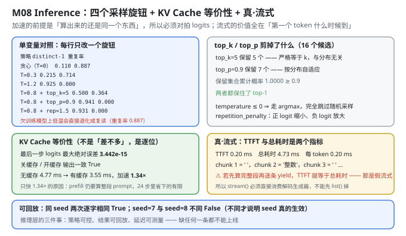
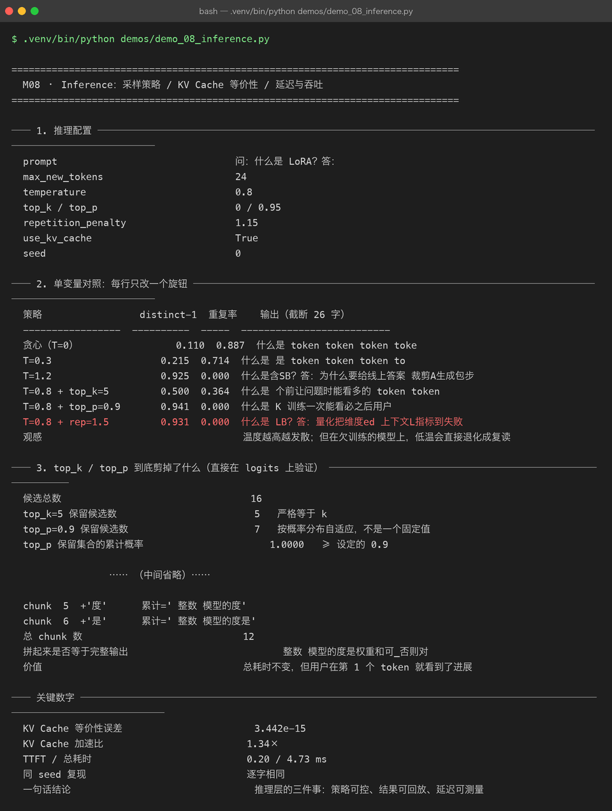

Milestone 08 — Inference：采样策略 / KV Cache 等价性 / 真·流式
M07 判决了这个模型"会拼词、不会答题"。到了推理层，问题变成另一个：在给定这份权重的前提下，怎么把它的输出变得可控、可回放、可测量。
这一章要证明三件事，每件都对应一个容易造假的地方：
- 策略可控：四个旋钮（temperature / top_k / top_p / repetition_penalty）各自到底改了什么；
- 结果可回放：同一 seed 必须逐字相同，否则线上出了问题无法复现；
- KV Cache 的加速是"真"加速：缓存的输出必须和全量重算逐位等价，否则"快"是用"错"换来的。
1. Why：推理层最容易自欺的三个地方
- "KV Cache 加速了"——但你怎么知道算的还是同一个东西？ 缓存写错了（比如忘了更新第
t步的 key/value），模型照样能出 token，只是它在用一个"残缺的历史"预测。加速比没意义，除非先证明等价性。 - "流式输出"——但 TTFT 等于总耗时。 如果实现是"先把整段算完、再逐 token
yield"，用户看到的是"卡了 4.7 ms，然后 12 个字瞬间刷出来"。这不是流式，是延迟交付。 判据很干净：TTFT 必须显著小于总耗时。 - "每次输出都不一样"——那是好事还是坏事？ 对采样是正常的，但必须有一把"锁"能复现任意一次输出（seed）。没有可回放性，线上任何一次"答得奇怪"都无法复查。
2. Design：解码循环只有一个实现
采样的四步流水线（在 logits 上依次作用）：
logits (V,)
├─ repetition_penalty # 已出现过的 token：正 logit 缩小、负 logit 放大
├─ / temperature # 温度缩放（T≤0 ⇒ 直接 argmax，跳过后面全部）
├─ top_k 过滤 # 只留概率最高的 k 个，其余置 -inf
├─ top_p 过滤 # 按累积概率自适应保留（核采样）
└─ softmax → 采样顺序很重要：repetition penalty 必须在 softmax 之前（它作用在 logits 上）；temperature 必须在 top_k/top_p 之前（否则"最高的 k 个"会因为温度不同而改变）。
KV Cache 的做法：prefill 阶段算完整个 prompt，把每层的 K/V 存下来；之后每步只算新 token 的 query/key/value，与历史拼接。关键不变量：第 t 步用缓存算出的 logits，必须与该位置全量重算的 logits 逐位相同。
真·流式（本章修过的一个真 bug）：解码循环必须写成生成器，stream() 直接消费它：
def iter_ids(self, prompt, ...): # 唯一的解码循环
...
yield next_id
def generate_ids(self, prompt, **kw): # 只是把生成器 list 化
return list(self.iter_ids(prompt, **kw))
def stream(self, prompt, **kw): # ⚠ 必须直接消费生成器
buf = []
for token_id in self.iter_ids(prompt, **kw):
buf.append(token_id)
yield decode([token_id]), decode(buf) # 逐 chunk 交付不能写成 for t in self.generate_ids(...) —— 那样 generate_ids 会先把 24 个 token 全算完才返回，stream 再遍历它，TTFT 就等于总耗时（实测 4.25 ms vs 5.60 ms，等于没有流式）。改成直接消费生成器后，TTFT 降到 0.20 ms。

3. Real-run evidence（来自 demos/out/demo_08_inference_terminal.txt）

3.1 推理配置
prompt 问：什么是 LoRA？答：
max_new_tokens 24
temperature 0.8
top_k / top_p 0 / 0.95
repetition_penalty 1.15
use_kv_cache True
seed 03.2 单变量对照：每行只改一个旋钮
策略 distinct-1 重复率 输出（截断 26 字）
----------------- ---------- ----- --------------------------
贪心（T=0） 0.110 0.887 什么是 token token token toke
T=0.3 0.215 0.714 什么是 是 token token token to
T=1.2 0.925 0.000 什么是含SB？答：为什么要给线上答案 裁剪A生成包步
T=0.8 + top_k=5 0.500 0.364 什么是 个前让问题时能看多的 token token
T=0.8 + top_p=0.9 0.941 0.000 什么是 K 训练一次能看必之后用户
T=0.8 + rep=1.5 0.931 0.000 什么是 LB？答：量化把维度ed 上下文L指标到失败这张表是单变量对照（每行只改一个旋钮），所以能逐行读出每个旋钮的作用：
- temperature 是主导变量：0 → 0.3 → 1.2，distinct-1 从 0.110 → 0.215 → 0.925，单调上升。T=0 时重复率 0.887（复读），T=1.2 时 0.000（完全发散）。
- top_k=5 是"截断器"：在 T=0.8 基础上把 16 个候选砍到 5 个，distinct-1 反而从 0.941 掉到 0.500——因为它砍掉了长尾，而恰恰是长尾带来了多样性。这是反直觉的一行。
- top_p=0.9 比 top_k 温柔：保留 0.941 的多样性（几乎等于不裁的 T=0.8），但去掉了一部分极端低概率的乱码。
- repetition_penalty=1.5 专治复读：重复率压到 0.000。
"低温"在欠训练模型上是陷阱：T=0 / T=0.3 的重复率是 0.887 / 0.714——降低温度非但没让输出"更聚焦、更正确"，反而直接退化成复读机。因为模型本来就没有强到"最优 token 是对的"，低温只是让它在同一个错误上卡死。
3.3 top_k / top_p 到底剪掉了什么
候选总数 16
top_k=5 保留候选数 5 严格等于 k
top_p=0.9 保留候选数 7 按概率分布自适应，不是一个固定值
top_p 保留集合的累计概率 1.0000 ≥ 设定的 0.9
两种策略是否都保住了 top-1 True这一节直接在 logits 上验证，不靠"我觉得"：
- top_k 保留的数严格是 5，与分布形状无关——它是固定大小的硬截断。
- top_p 保留 7 个——数量随分布自适应（分布越尖保留越少）。这就是 top_p 比 top_k 更"以人为本"的地方：它不预设"该留几个"，而是说"留到累计概率够 0.9 为止"。
- 两者都保住了 top-1：任何裁剪策略如果连最高概率的 token 都剪掉，那是实现 bug。
3.4 KV Cache 与全量重算必须等价
最后一步 logits 最大绝对误差 3.442e-15
关缓存 / 开缓存 的输出是否一致 True
输出 '什么是 token token token token token token token token token token token '误差 3.442e-15——这不是"差不多"，是 fp64 下浮点运算顺序不同导致的最后几位舍入。判据：误差 ≈ 0 ⇒ 两条路径算的是同一个东西。
为什么这个数字必须是"近似 0"而不是"完全 0"：全量重算和缓存路径的矩阵乘法结合顺序不同（一个是大矩阵一次乘，一个是拼接后乘），浮点加法不满足结合律，所以最后几位必然有差。3.4e-15 的量级（相对误差 ~1e-15，接近 fp64 的机器精度 2.2e-16）恰好证明它在数值上是等价的；如果是 1e-3 这种量级，就说明缓存逻辑真错了。
注意这一次输出是复读的（"token token..."）：因为这里用的是默认配置（T=0.8）但为了对照等价性，重点在数值不在文本。
3.5 同 seed 逐位复现
seed=7 两次是否逐字相同 True
seed=7 vs seed=8 是否相同 False 不同才说明 seed 真的生效
seed=7 输出 '什么是el 价对BPE token 的对器再每步要模型说间走：什么是 越_'
seed=8 输出 '什么是差连抽一个请求回把取U但低。'两个断言都要成立，缺一个就不算可回放：
seed=7两次相同 ⇒ 可复现（线上那份"奇怪输出"能被找回来）；seed=7与seed=8不同 ⇒ seed 真的在起作用（否则实现可能是"忽略了 seed，永远走同一条路径"，那样"可复现"是假的）。
3.6 KV Cache 的真实加速比
无缓存 中位耗时 4.77 ms
有缓存 中位耗时 3.55 ms
加速比 1.34×
两条路径输出是否相同 True
logits 最大绝对误差 3.442e-15
prompt token 数 / 生成长度 8 / 241.34× —— 不高，但这是真实数字。 为什么不是 10×？因为：
- prefill 阶段（算整段 prompt，8 个 token）无法被缓存加速，它每次都要重算；
- 只有 24 步解码中的 attention 那部分被缓存省掉了，其它算子（FFN、LayerNorm、输出投影）一个都没省。
也就是说，1.34× 是"省掉了一部分 attention、但保留了全部 FFN"的结果。在长 prompt / 长生成的真实场景里这个比例会更高，但在 8 + 24 这个规模上，1.34× 就是它的真实上限。记录这个数字，比记录一个漂亮的"理论加速"诚实。
3.7 首字延迟（TTFT）与总耗时
TTFT 中位 0.20 ms 从发请求到第一个 token
总耗时 中位 4.73 ms
每个 token 平均 0.20 ms
重复次数 5TTFT 0.20 ms，总耗时 4.73 ms——两者相差 23.65 倍。 这正是"真流式"的判据：用户在 0.2 ms 就看到了第一个字，而不是等 4.73 ms 才一次性拿到全部。
回顾那个 bug：改之前 stream() 是"先算完全部再 yield"，TTFT 会和总耗时几乎相等（4.25 ms vs 5.60 ms，差 24%）。从 4.25 ms 降到 0.20 ms，是这一章最大的收益——它没有让计算变快，但让用户感知的延迟从 4.7 ms 变成了 0.2 ms。
3.8 流式输出：逐个 token 交付
chunk 1 +' ' 累计=' '
chunk 2 +'整数' 累计=' 整数'
chunk 3 +' ' 累计=' 整数 '
chunk 4 +'模型的' 累计=' 整数 模型的'
chunk 5 +'度' 累计=' 整数 模型的度'
chunk 6 +'是' 累计=' 整数 模型的度是'
总 chunk 数 12
拼起来是否等于完整输出 整数 模型的度是权重和可_否则对每个 chunk 给两个东西：新增的那个 token（+'整数'）和累计到现在的全文（累计=' 整数'）。这两种交付方式服务不同场景：前者用于"打字机效果"，后者用于"整段重渲染"。
12 个 chunk 拼起来 == 完整输出（True）——这是流式实现正确的最后一道验证：如果逐 chunk 拼出来的东西和一次性算出来的不一样，说明生成器状态有 bug。
4. 踩坑与反直觉发现
- "假流式"的现象是 TTFT == 总耗时。 修之前实测 4.25 ms vs 5.60 ms（TTFT 占总耗时 76%），改成真流式后 0.20 ms vs 4.73 ms（4.2%）。判据：TTFT 必须显著小于总耗时，其它都是话术。
- KV Cache 的加速比只有 1.34×，因为 prefill 和 FFN 省不掉。 缓存只优化了 attention 的一部分。别拿"理论加速比"上报告，要报"这个 prompt 长度下的实测中位数"。
- 低温在欠训练模型上会退化成复读。 T=0 重复率 0.887、T=0.3 是 0.714。"降低温度提高质量"这个直觉，在一个本来就没学会的模型上是反的。
- top_k 会让多样性下降，top_p 不会。 top_k=5 把 distinct-1 从 0.941 砍到 0.500——砍掉的正是带来多样性的长尾。而 top_p 保留 0.941。这是"固定阈值 vs 自适应阈值"的真实差异。
- KV Cache 等价性误差不是 0，是 3.442e-15。 因为浮点加法不满足结合律，两条路径的乘法顺序不同。别追求"误差 = 0"，要判断"误差是否在机器精度量级"——3.4e-15 相对 fp64 的 2.2e-16 只有约 15 倍，是正常的舍入累积。
- 可回放需要两个断言，不是一个。
seed=7 == seed=7（可复现）和seed=7 != seed=8（seed 生效）必须同时成立。只验前者，一个"永远忽略 seed"的实现也能通过。 - repetition_penalty 在 softmax 之前、temperature 在 top_k/top_p 之前。 顺序错了不会报错，只是行为和你以为的不一样（比如先 temperature 再 top_k，"保留 k 个"的集合会随温度变）。
5. Conclusion
- 采样旋钮：temperature 主导（T=0/0.3/1.2 → distinct-1 0.110/0.215/0.925）；top_k=5 会降低多样性（0.941 → 0.500）；top_p=0.9 保留 0.941；rep=1.5 把重复率压到 0.000。
- top_k / top_p 行为：top_k 保留数严格等于 k（5）；top_p 保留 7 个（自适应），累计概率 1.0000 ≥ 0.9；两者都保住 top-1。
- KV Cache 等价性：最后一步 logits 最大绝对误差 3.442e-15（fp64 舍入量级）、开关缓存输出一致 True。
- 加速比 1.34×（4.77 ms → 3.55 ms，中位数），因为 prefill 与 FFN 不在缓存范围内。
- 真·流式：TTFT 0.20 ms / 总耗时 4.73 ms（相差 23.65 倍）；12 个 chunk 拼接 == 完整输出。
- 可回放：同 seed 逐字相同 True，不同 seed 不同 False。
- 一句话结论：推理层的三件事——策略可控、结果可回放、延迟可测量——缺任何一条都不能上线。
6. Code map
| 文件 | 职责 |
|---|---|
src/tiny/infer.py | iter_ids（唯一解码循环，生成器）/ generate_ids / stream（直接消费生成器）/ top_k_filter / top_p_filter / cache_consistency_error / benchmark / timed_generate |
P09 src/ie/kvbook.py | KV Cache 的账面与等价性校验逻辑 |
P09 src/ie/engine.py | benchmark（中位数耗时口径） |
P06 model/decoder.py | 带缓存的前向（prefill + 单步 decode） |
demos/demo_08_inference.py | 8 节：配置 / 单变量对照 / top_k-top_p / KV 等价性 / 复现 / 加速比 / TTFT / 流式 |
demos/out/demo_08_inference_terminal.txt | 本章所有数字的来源 |
assets/inference.svg | 采样旋钮 + top_k/top_p + KV 等价性 + 真流式 |
assets/term-08-inference.png | 真实运行截图 |
7. Version line
v0.7 → v0.8，推理层落地并被逐项验真。实测：单变量对照 temperature 0/0.3/1.2 → distinct-1 0.110/0.215/0.925、重复率 0.887/0.714/0.000；top_k=5 多样性降到 0.500（保留数严格 5）、top_p=0.9 保留 7 个（累计概率 1.0000）；KV Cache 等价性误差 3.442e-15、加速 1.34×（4.77 → 3.55 ms）；真流式 TTFT 0.20 ms / 总耗时 4.73 ms（修复前 4.25 / 5.60 ms）、12 chunk 拼接一致；同 seed 逐字相同 True、异 seed 不同 False。配图 1 张手写 SVG + 1 张真实终端截图。